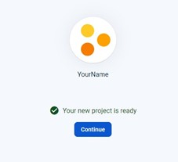

Create and Deploy a Website to Firebase
Overview
Scenario
In this scenario, you are preparing for an upcoming interview with a company that uses Firebase Hosting. You need to create a personal portfolio webpage on the internet that you can share with the employer. The job description states that a minimum requirement is experience with Google Firebase Hosting, and the preferred candidates will have used Node.js. In this assignment, you will use both.
Business Requirements
- Marketing portfolio website to obtain jobs
Project Requirements
- Use Visual Studio Code as your text editor
- Use an automated scalable web hosting service
- Use Google Web Services if possible
- Use Node.js to deploy your webpage from your computer to the hosting service
- The project name must include your last name
Table of Contents
Instructions
Watch the video instead: Firebase Hosting Setup Video
Step 1: Install Visual Studio Code and Node.js
Hopefully, you already have Visual Studio Code and Node.js installed on your computer. If not, ask ChatGPT how to install them and follow the instructions from ChatGPT.
Step 2: Create a New Project in Firebase?
- Sign into the Google Firebase console using your BYU-Idaho email address (the email address with numbers, for example: bos24011@byui.edu).
Trouble signing in? Open my.byui.edu, click “Profile”, scroll down to “Campus Email”, and use that email for the Google Firebase sign in


- If that doesn’t work, use a personal Gmail account.
Click Add Project.

Name your Project with your name and accept the terms

Enable Google Analytics

Use default settings and accept terms

Wait for creation to complete

Step 3: Create Necessary Files in VS Code
Open Visual Studio Code (VS Code) and click File > New Window
Click Open Folder or on Mac Open (not open folder) to open a new folder
Click New Folder (on Mac) or right-click and choose New > Folder (on Windows) and make a new project folder called firebaseproject or a name of your choice and open it.
Click Yes, I trust the authors

In VS Code, create a new folder called
publicinside the project (it must be calledpublic) by clicking on the + folder icon.Type
publicfor the new folder nameClick on the
publicfolder to select it
Make a new file by clicking on the + file icon (make sure the
publicfolder is still selected)Make the
index.htmlfile inside thepublicfolder (notice that it is indented a little). Make sure it is indented so that it is inside thepublicfolder.
Create another new file by clicking on the + file icon.
Type the filename
styles.cssto create the styling file for your webpages. (If your CSS file is not indented under thepublicfolder, drag it into there).Make sure the
styles.cssand theindex.htmlfiles are indented with a line like this image below so that you know it is in thepublicfolder
Open the terminal in VS Code by clicking on the Terminal menu > New Terminal
In that new terminal window, run the commands given below
Step 4: Install Google Firebase by asking ChatGPT
Sign into ChatGPT
Start a new chat
In the new chat prompt at the bottom, type How can I make a simple firebase webpage that uses node.js?
NOTE: If ChatGPT asks you to install express or admin tools, you don’t need to do that. Sometimes, ask ChatGPT the same thing a few times. You will get better results as you analyze them.

For Windows machines: Change the execution policy
Search for Powershell and run it as administrator.
Run the following command:
Set-ExecutionPolicy RemoteSignedType A and press enter
The prompts/commands ChatGPT provides should be run in the terminal in VS Code. For MAC Users, you may have to put
sudoin front of the commands.For example, ChatGPT should prompt you to install Firebase using
npm(node package manager). (-gmeans to install it globally)
Click Copy Code from ChatGPT then paste it in the terminal in VS Code. Hit Return/Enter to run it
It should install a few things and it might look like this:

When firebase is installed, it should look something like this:
Step 5: Login to Firebase with your account
Login to firebase in your VS Code terminal with the command
firebase login
Type n and press Return/Enter to not submit usage and error information
Login as needed and you may see this page in your terminal window

Login with your
byui.eduemail address, accept the terms and click continue
Allow the firebase CLI (command line interface) to access Google

You should see a success prompt in the browser and in the terminal
Step 6: Initialize Firebase in your project
Initialize the firebase project by typing in
firebase initin the terminal in VS codeTake note of the directory it gives. When configuring multiple firebase projects, you need to be in a different directory for each.
Type y to proceed and type Return/Enter
Use the arrows on your keyboard to select Hosting: Configure files for Firebase hosting and (optionally) set up GitHub action deploys. Press the spacebar on your keyboard followed by Return/Enter.

Use the arrows on your keyboard to select Use and existing Project and press Return/Enter. This will allow us to choose a project we previously in Google Firebase
Pick the name of the project you made previously by using the arrow keys on your keyboard and then press Return/Enter.
Choose the
publicfolder (provided by default) by pressing Return/Enter on your keyboard.Do not configure it as a single-page app by typing n and press Return/Enter

We won’t set it up with GitHub for automatic builds and deploys, so type n and press Return/Enter.
We want to overwrite the index.html file. Type y then press Return/Enter.
Step 7: Deploy your project to Firebase
Type
firebase deployin the terminal. This will deploy your code to a website URL that you can share with others (You must run this each time you modify your code to push the changes to the cloud).
Copy the Hosting URL and paste it in a new tab in your browser
The URL should be something like https://yourproject.web.app and will look something like this:
Step 8: Create a Profile webpage using AI and deploy to Firebase Hosting
In VS Code, double-click the
index.htmlfile we created in the public folder and delete all of the code. You can also press (CMD/CTRL + A to select all and then Delete/Backspace).Ask ChatGPT the following Please give me code for my index.html file and a styles.css file that would be a nice portfolio page and link them
Click Copy Code for the index.html file and paste it into that file in VS Code
Paste the HTML code from ChatGPT into the file, or click Edit > Paste from the menu, or press CMD/CTRL + V
Save the file with File > Save from the menu or press CMD/CTRL + V.
This HTML code is to provide the text and structure for the webpage.
Now do the same thing with the CSS code provided by ChatGPT. If you don’t have CSS code, ask ChatGPT for it.
In VS Code, delete all the content from the styles.css file and paste in the provided code.
Save the file.
The WDD 130 Course teaches more about HTML and CSS
Run
firebase deployagain in the terminal to push your changes to FirebaseRefresh the URL in your browser by clicking the refresh button while holding shift on your keyboard. This will refresh the cache of the page.
Step 9: Ask ChatGPT questions
Ask ChatGPT about any concepts that you don’t understand or you are unsure of
- What is Node.js?
- What is the purpose of Node.js within a web application?
- What is hosting?
- Can you make a website without hosting?
Troubleshooting & Common Problems
Permission Errors or firebase installation not working
(Mac/Apple) You may need to run the
sudocommand in front of the firebase installation commands and/or other commands in the terminal(Windows) You may need to run the terminal commands in a terminal window or in powershell.
(Windows) When you search for command prompt click on the run as administrator option.
If firebase doesn’t deploy
Rerun
firebase initand make sure you choose the correct options from Step 6
Error: No firebase projects associated with this account
Are you logged into firebase with the same credentials and email?
Re-run
firebase initSelect Don’t set up a default project
Pick the same options of yes
Run
firebase use (projectid)(Replace with your projectid)
The website doesn’t load the styles, but only the words appear
Make sure the
styles.cssfile is in thepublicfolder and that it is linked in theindex.htmlfileMake sure the
styles.cssfile is linked in theindex.htmlfile with the correct pathMake sure the
styles.cssfile is saved
Node.js is not able to run
Create a
package.jsonfile and paste the following into it:{ "dependencies": { "express": "^4.18.2", "firebase": "^10.7.2", "firebase-admin": "^12.0.0" } }
Cannot get Firebase to finish setting up and installing
You may need to create the
firebase.jsonfile and paste the following into it.{ "hosting": { "public": "public", "ignore": [ "firebase.json", "**/.*", "**/node_modules/**" ], "rewrites": [ { "source": "**", "destination": "/index.html" } ] }, "firestore": { "rules": "firestore.rules", "indexes": "firestore.indexes.json" } }
Learning More
Classes to take
Want to learn more about websites? Take WDD130 or WDD331R
Want to learn more about the Cloud? Take ITM300 or ITM310
Build Your Resume
Deployed a Javascript website to Firebase Hosting
(Future Project): Create a react website implementing tailwind CSS and deploy it to Firebase Hosting
Improve Your Site
Modify the website to look better with HTML or CSS
Deploy React website instead
Implement Tailwind or Bootstrap
Adding SCSS (WDD331R teaches SCSS and preprocessors)
Install node-sass that will convert your .scss file to a .css file. You still need to make sure your index.html file is linked to the .css file that is generated from the .scss file.
Run this in the terminal
npm install node-sass
Add this to your package.json file (create this file if needed - outside the public folder)
"scripts": { "build": "node-sass public/styles.scss public/styles.css" }In the terminal run
npm run buildIdeally, you put the
styles.cssfile inside a folder titled css and you would put the styles.css file outside of the public folder (modify the script above)Add a server.js file to run with node
const express = require('express'); const app = express(); // Serve static files from the 'public' directory app.use(express.static('public')); // Define routes or any other server-side logic here if needed const PORT = process.env.PORT || 3000; app.listen(PORT, () => { console.log(`Server is running on http://localhost:${PORT}`); });Require express and node-sass as dependencies and create start, build, and deploy, options for node. This code would be in your package.json file:
{ "dependencies": { "express": "^4.18.2", "node-sass": "^9.0.0" }, "scripts": { "start": "node public/server.js", "build": "node-sass public/styles.scss public/styles.css", "deploy": "firebase deploy" } }